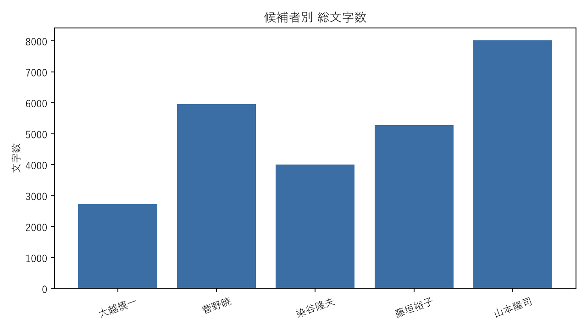
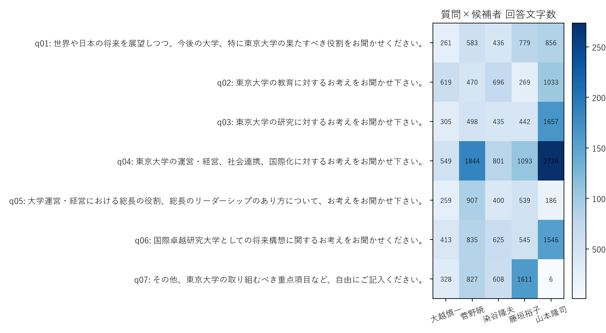

総長候補者テキスト分析レポート
東京大学新聞社「総長選考2026 候補者紹介」に掲載された第2次候補者5名の所見文を対象に、 共通論点と候補者ごとの差異を整理した。全文はローカルの raw HTML / raw txt / 解析 CSV に追跡できる。
要約
- 分量面では山本隆司が 8,020 文字で最長、大越慎一が 2,734 文字で最短だった。
- 設問別では山本隆司が q01・q02・q03・q04・q06 で最長回答者となり、ガバナンスや制度設計に関する設問で特に記述量が大きい。
- 5候補に広く共有された内容語としては、課題・必要・国際・社会・役割・組織・部局が目立ち、大学の将来像を社会的課題と制度運営の両面から捉える傾向が共通していた。
- ただし共通語のなかでも『部局』『組織』『課題』は山本隆司への偏りが大きく、共有テーマの中にも候補者ごとの差が埋め込まれている。
- 語彙の多様性を示す TTR は大越慎一が 0.495 で最も高く、短めの回答でも比較的多様な語を使っていた。
Data & Method
データは候補者一覧ページから第2次候補者5名のみを抽出し、各候補者の詳細ページ本文を raw HTML と raw txt として保存した。 質問単位の分析では candidate × question を基本単位とし、35文書の long format を作成した。
| 項目 | 内容 |
|---|---|
| データ出典 | 東京大学新聞社『総長選考2026 候補者紹介』の公開ページ |
| 対象 | 第2次候補者5名 |
| 設問数 | 7設問 |
| 分析単位 | candidate × question の 35 文書 |
| コーパス規模 | 25,997文字 / 分析対象トークン 6,867 |
| 形態素解析 | MeCab + unidic-lite。主分析は名詞・動詞・形容詞を保持 |
| 除外語の扱い | 大学・東京大学・本学・東大・研究・教育を stopword として別列で管理。レポート本文はその除外後結果を中心に使用 |
| 共通語指標 | candidate prevalence = その語を1回以上使った候補者数 / 5 |
| 共通課題指標 | KWIC、同文内共起、問題表現（必要・課題・問題など）との近接を併用 |
| 特徴語指標 | TF-IDF（N = 5 documents）と weighted log-odds ratio を併用 |
| log-odds設定 | informative Dirichlet prior。prior_strength = 100.0 |
| 注意点 | 語彙の生データには『する』『ある』などの高頻度動詞も残るため、解釈節では内容語を選んで要約 |
| 補足 | 山本隆司の q07 は『(記述なし)』で、自由記述は実質空欄 |
共通語の原データには、軽い正規化のみを行った結果として「する」「ある」などの一般的な動詞も残る。 本レポートの解釈では、raw の透明性を維持したまま、内容理解に有効な名詞・複合名詞を中心に記述した。
コーパスの概観
回答量には大きな差があり、山本隆司が最長、ついで菅野暁、藤垣裕子が続く。 一方で大越慎一は最も短いが、TTR は5候補中で最も高く、限られた分量のなかで比較的多様な語彙を使っている。
| 候補者 | 総文字数 | 文字数シェア | 1回答あたり平均文字数 | 分析対象トークン数 | TTR |
|---|---|---|---|---|---|
| 大越慎一 | 2,734 | 10.5% | 390.6 | 727 | 0.495 |
| 菅野暁 | 5,964 | 22.9% | 852.0 | 1,591 | 0.397 |
| 染谷隆夫 | 4,001 | 15.4% | 571.6 | 1,108 | 0.435 |
| 藤垣裕子 | 5,278 | 20.3% | 754.0 | 1,382 | 0.412 |
| 山本隆司 | 8,020 | 30.8% | 1145.7 | 2,059 | 0.297 |


設問別に最も長かった回答
| 設問ID | 設問 | 最長回答者 | 文字数 |
|---|---|---|---|
| q01 | 世界や日本の将来を展望しつつ、今後の大学、特に東京大学の果たすべき役割をお聞かせください。 | 山本隆司 | 856 |
| q02 | 東京大学の教育に対するお考えをお聞かせ下さい。 | 山本隆司 | 1,033 |
| q03 | 東京大学の研究に対するお考えをお聞かせ下さい。 | 山本隆司 | 1,657 |
| q04 | 東京大学の運営・経営、社会連携、国際化に対するお考えをお聞かせ下さい。 | 山本隆司 | 2,736 |
| q05 | 大学運営・経営における総長の役割、総長のリーダーシップのあり方について、お考えをお聞かせ下さい。 | 菅野暁 | 907 |
| q06 | 国際卓越研究大学としての将来構想に関するお考えをお聞かせください。 | 山本隆司 | 1,546 |
| q07 | その他、東京大学の取り組むべき重点項目など、自由にご記入ください。 | 藤垣裕子 | 1,611 |
共通認識
5候補が広く共有した内容語を見ると、全員が東京大学の将来を「課題」への対応として捉え、 その対応を「国際」「社会」「役割」と結びつけて説明していることが分かる。 加えて「組織」「部局」が5候補すべてで確認されるため、教育研究の中身だけでなく、 それを支える制度や運営体制も共通論点になっている。
| 語 | 使用候補者数 | 総頻度 | 大越 | 菅野 | 染谷 | 藤垣 | 山本 |
|---|---|---|---|---|---|---|---|
| 必要 | 5 | 72 | 4 | 20 | 6 | 19 | 23 |
| 社会 | 5 | 72 | 9 | 12 | 21 | 9 | 21 |
| 国際 | 5 | 59 | 8 | 13 | 4 | 9 | 25 |
| 課題 | 5 | 42 | 4 | 8 | 6 | 1 | 23 |
| 部局 | 5 | 41 | 3 | 5 | 7 | 1 | 25 |
| 役割 | 5 | 37 | 2 | 12 | 6 | 8 | 9 |
| 組織 | 5 | 37 | 3 | 4 | 6 | 5 | 19 |
ただし、共通語が即座に共通課題を意味するわけではない。KWIC と共起を合わせて見ると、 「課題」は世界情勢・大学財政・研究環境・ガバナンスといった複数の局面をまたいで使われていた。 「部局」「組織」は全候補に見られる一方、山本隆司に大きく集中しており、 共通の語であっても焦点の当て方には明確な差がある。
したがって、本データから言えるのは「5候補とも、東京大学の将来を社会的・国際的課題への対応として語る」という点と、 「その対応を支える組織設計や部局間の関係調整が、多くの候補で重要テーマになっている」という点である。
候補者ごとの差異
候補者差の把握には、TF-IDF と weighted log-odds の両方で上位に入る語を優先した。 こうすることで、単に1回だけ現れたレア語ではなく、その候補に比較的安定して偏る語を抽出している。
| 候補者 | 特徴語 | 頻度 | TF-IDF順位 | log-odds順位 | z-score |
|---|---|---|---|---|---|
| 大越慎一 | 創造 | 8 | 12 | 1 | 4.12 |
| 大越慎一 | 学知 | 5 | 7 | 3 | 3.51 |
| 大越慎一 | 価値 | 6 | 9 | 5 | 3.42 |
| 大越慎一 | 技術 | 6 | 15 | 6 | 3.42 |
| 大越慎一 | 構築 | 6 | 16 | 7 | 3.42 |
| 大越慎一 | 支援 | 5 | 37 | 15 | 2.65 |
| 菅野暁 | 経営 | 18 | 10 | 1 | 4.36 |
| 菅野暁 | 職員 | 13 | 8 | 2 | 4.15 |
| 菅野暁 | 学長 | 7 | 31 | 6 | 2.76 |
| 菅野暁 | 強化 | 10 | 23 | 13 | 2.48 |
| 染谷隆夫 | 構成 | 13 | 9 | 1 | 3.88 |
| 染谷隆夫 | 投資 | 7 | 23 | 3 | 3.31 |
| 染谷隆夫 | 環境 | 12 | 8 | 7 | 2.93 |
| 染谷隆夫 | 現場 | 6 | 14 | 6 | 3.11 |
| 染谷隆夫 | 社会 | 21 | 3 | 11 | 2.87 |
| 染谷隆夫 | 人材 | 9 | 17 | 10 | 2.87 |
| 藤垣裕子 | 学術 | 14 | 16 | 7 | 2.87 |
| 藤垣裕子 | 科学 | 11 | 18 | 8 | 2.76 |
| 藤垣裕子 | 壁 | 7 | 22 | 6 | 3.25 |
| 藤垣裕子 | 環境 | 13 | 11 | 13 | 2.61 |
| 藤垣裕子 | 人類 | 6 | 21 | 15 | 2.53 |
| 藤垣裕子 | 情報 | 5 | 40 | 14 | 2.54 |
| 山本隆司 | ガバナンス-governance | 18 | 8 | 1 | 4.25 |
| 山本隆司 | 部局 | 25 | 11 | 2 | 4.01 |
| 山本隆司 | プロセス-process | 19 | 7 | 3 | 3.89 |
| 山本隆司 | 組織 | 19 | 17 | 12 | 2.71 |
| 山本隆司 | 課題 | 23 | 15 | 6 | 3.32 |
| 山本隆司 | 法人 | 8 | 27 | 14 | 2.68 |
読み取り
- 大越慎一：大越慎一は、知の創造・価値創造・技術・構築・支援といった語が上位に並び、研究と教育を新しい学知や制度設計につなげる構想を前面に出している。
- 菅野暁：菅野暁は、経営・職員・学長・強化が目立ち、大学運営を人的資源とリーダーシップの設計問題として語る比重が大きい。
- 染谷隆夫：染谷隆夫は、構成・投資・環境・現場・人材が上位に出ており、研究教育の場をどう整え、長期的に成長させるかという視点が強い。
- 藤垣裕子：藤垣裕子は、学術・科学・壁・環境・人類といった語を通じて、知の基盤や学内外のコミュニケーション障壁をどう越えるかを重視している。
- 山本隆司：山本隆司は、ガバナンス・部局・プロセス・組織・課題・法人が圧倒的に強く、大学の問題を統治構造と意思決定過程の設計として捉えている。
まとめると、5候補とも課題認識を共有しつつ、強調点はかなり異なる。 大越は知の創造と制度構築、菅野は経営と職員・学長の役割、染谷は環境整備と投資、藤垣は学術基盤と壁の克服、 山本はガバナンスと組織過程に最も強く重心を置いている。
解釈上の留意点
- TF-IDF の候補者単位分析は N = 5 のため、探索用途と位置づけるべきである。
- MeCab の辞書形には語種によって英語グロス付き表記（例: ガバナンス-governance, プロセス-process）が混ざる。
- 共通語の raw 出力には一般動詞も残るため、厳密な読解には KWIC と レビュー用テンプレート で原文に戻る必要がある。
- 山本隆司の q07 は「記述なし」であり、自由記述欄の比較は他4候補と完全には対称でない。
参照ファイル
このレポートはローカルの生成物から再構築できる。